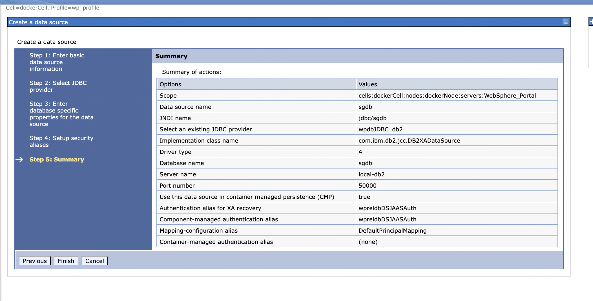
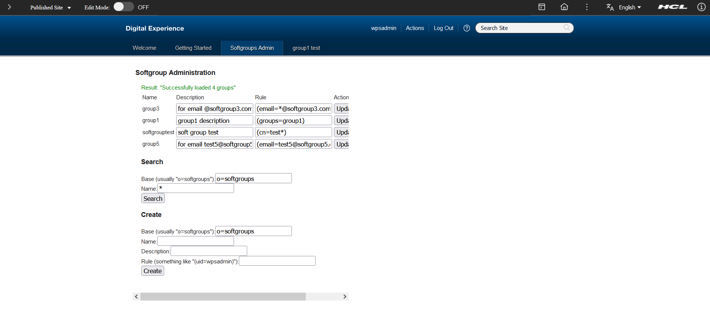

Configuring Rule-based user groups adapter for Transient Users
Overview
The Rule-based user groups (Softgroups) for HCL Portal allow you to define dynamic portal user groups. For more information, see capabilities.
The rule-based user group is implemented as a custom repository adapter for Virtual Member Manager (VMM). A unique group name represents rule-based user groups, the Lightweight Directory Access Protocol (LDAP) search filter rule expression, and an optional description. The HCL DX handles them as normal portal user groups. They are in a special base distinguished name in the user realm hierarchy.
Administrators can create, define, update, or delete them by using the VMM API in WebSphere® Application Server or the Portal User Management Architecture (PUMA) in HCL DX like other groups. You can use these Softgroups to assign security role mappings, portal access permissions, or visibility rules the same way as other portal user groups. The rule-based user groups feature handles the correct membership determination for the users during run time.
This configuration allows user roles and groups from an Identity Provider's (IdP) claim token, to be mapped with these Softgroups. To leverage this feature, you have to build a custom Java Authentication and Authorization Service (JAAS) Login Module. For more information on using Softgroup service, see Building a custom JAAS login module for your Identity Provider (IdP).
The Softgroups(rule-based user groups) configuration allows user roles and groups from an Identity provider to be mapped to softgroups in DX through the OIDC Claim Token, WAS/DB configuration, and custom JAAS Login Module code.
Creating database
Create a database before Softgroups is used. The Softgroups feature stores the definitions of the rule-based user groups in a database table. This includes the name, rule, and description of the group. Use one of the following SQL statements to create the table, using a database and schema of your choice. Replace schema_name in the scripts with the schema name of your choice.
This configuration has been tested using the DB2 database. Although databases like SQL or Oracle are used instead of DB2. For more information on creating database, tables and schema, see Database setup.
Note
This configuration is not tested on SQL or Oracle. But should work in general.
Use the following commands to create the database, tables and schema:
CREATE DATABASE sgdb
CONNECT TO sgdb USER db2inst1 USING <YOUR_DB_PASSWORD>
CREATE SCHEMA softgrouptest AUTHORIZATION db2inst1;
CREATE TABLE softgrouptest.SOFTGROUPS (ID INT NOT NULL GENERATED ALWAYS AS IDENTITY, GROUPNAME VARCHAR(128) NOT NULL, RULE VARCHAR(300) NOT NULL, DESCRIPTION VARCHAR(512), LASTMODIFIED TIMESTAMP, PRIMARY KEY (ID), UNIQUE (GROUPNAME));
CREATE INDEX softgrouptest.SOFTGROUPSIX1 ON softgrouptest.SOFTGROUPS (LASTMODIFIED DESC);
COMMIT;
Configuring a data source
When you create a data source, you associate it with a Java Database Connectivity (JDBC) provider that is configured to access a specific vendor database. The application server requires both objects for your applications to make calls to that particular database and receive data from it. The data source provides connection management capabilities that physically make possible these exchanges between your applications and the database.
-
Log in with the admin user into WebSphere Integrated Solutions Console (ISC).
-
Navigate to Resources > JDBC > Data sources:
- In the Scope dropdown select
Node=dockerNode, Server=WebSphere_Portal. - Click New.
- In the Scope dropdown select
-
Enter the basic data source information and click Next:
Field Value Data source name sgdb JNDI name jdbc/sgdb -
Select an existing JDBC provider and click Next:
Field Value Select an existing JDBC provider wpdbJDBC_db2 -
Enter the database-specific properties for the data source and click Next:
Field Value Driver type 4 Databse name sgdb Server name local-db2 Port number 50000 -
Setup the security aliases and click Next:
Field Value Authentication alias for XA recovery wpreldbDSJAASAuth Component-managed authentication alias wpreldbDSJAASAuth Mapping-configuration alias DefaultPrincipalMapping Container-managed authentication alias (none) -
On the summary page review all the values and click Finish.

Updating custom properties for JAAS and Softgroups
-
In the WAS ISC navigate to Global security > Java Authentication and Authorization Service > System logins > WEB_INBOUND, and click on your module
com.hcl.dx.auth.jaas.impl.TransientUsersLoginModule. -
Add the following custom properties for the Softgroups Service instance that ia referenced in the JAAS module:
Name Value sgroup.dataSourceJNDIName <dataSourceJNDIName> sgroup.dbSchema <dbSchema> sgroup.dbType <dbType> -
Add a new custom property for the custom Softgroups role/group key. This key is referenced in the JAAS module to select the appropriate set of values from the OIDC claim token and used in setting/retrieving the correct user group information:
Name Value sgroup.softgroupKey <IDP_SOFTGROUP_KEY> For example: "groups", "roles", etc.
-
In the WAS ISC navigate to Resources > Resource Environment > Resource Environment Providers > WP PumaStoreService > Custom properties:
-
Populate the fields:
Field Value Name store.puma_default.filter.assertionFilter.classname Value com.ibm.wps.um.AssertionFilter -
Click Apply and then Save.
-
-
In the WAS ISC, navigate to Servers > Server Types > WebSphere application servers > WebSphere_Portal > Java and process management > Process definition > Java Virtual Machine and in Classpath add
/opt/HCL/PortalServer/base/wp.base/shared/app/wp.base.jar. -
Restart the DX server:
cd /opt/HCL/AppServer/bin ./stopServer.sh WebSphere_Portal ./startServer.sh WebSphere_Portal
Configuring the VMM rule-based groups repository
Configuring the VMM repository and realm
Run the wp-create-cur, wp-create-cur-custom-property, and wp-update-group-repository-relationship commands to configure the VMM repository and realm:
- Open a command prompt and change to wp_profile_root/ConfigEngine directory.
-
Run the following task to add the repository configuration to VMM:
./ConfigEngine.sh wp-create-cur -Dfederated.cur.id=SoftGroups -Dfederated.cur.adapterClassName=com.ibm.wps.vmm.adapter.softgroups.SoftgroupsAdapter -Dfederated.cur.baseDN=o=softgroups -DWasUserId=yourwasuserid -DWasPassword=yourwaspassword -
Run the following command to update the repository configuration with custom properties:
./ConfigEngine.sh wp-create-cur-custom-property -Dcur.id=SoftGroups -Dcur.name=dataSource -Dcur.value=nameofdatasource -DWasUserId=wpsadmin -DWasPassword=yourwaspassword ./ConfigEngine.sh wp-create-cur-custom-property -Dcur.id=SoftGroups -Dcur.name=dbSchema -Dcur.value=yourschema -DWasUserId=wpsadmin -DWasPassword=yourwaspasswordExample of DB2 specific tasks:
./ConfigEngine.sh wp-create-cur-custom-property -Dcur.id=SoftGroups -Dcur.name=dataSource -Dcur.value=jdbc/sgdb -DWasUserId=wpsadmin -DWasPassword=wpsadmin ./ConfigEngine.sh wp-create-cur-custom-property -Dcur.id=SoftGroups -Dcur.name=dbSchema -Dcur.value=softgrouptest -DWasUserId=wpsadmin -DWasPassword=wpsadmin -
Enable the cross-repository group lookup for the repositories you want to use. To find Groups Entities in the SoftGroups Repository, run the following task:
./ConfigEngine.sh wp-update-group-repository-relationship -Drepository.id=transientidp -Drepository.forgroups=SoftGroups -DWasUserId=wpsadmin -DWasPassword=yourwaspassword
Note
Please verify repository.id value from /opt/HCL/wp_profile/config/cells/dockerCell/wim/config/wimconfig.xml. In our case its transientidp
Configuring the rule attribute for the Group
In addition to the repository configuration, define the rule attribute as a new attribute for the entity type Group:
-
Edit the file
wimxmlextension.xmlin the directory[PortalServer\_root]/config/cells/dockerCell/wim/model. If the file does not exists create a new one. Add the following attribute definition to the file:<sdo:datagraph xmlns:sdo="commonj.sdo" xmlns:wim="http://www.ibm.com/websphere/wim"> <wim:schema> <wim:propertySchema nsURI="http://www.ibm.com/websphere/wim" dataType="String" multiValued="false" propertyName="rule"> <wim:applicableEntityTypeNames>Group</wim:applicableEntityTypeNames> </wim:propertySchema> </wim:schema> </sdo:datagraph> -
Edit the file
wimconfig.xmlin the directory[PortalServer\_root]/config/cells/dockerCell/wim/configand ensure that the following value exists, if not update it:<config:CustomProperties name="dataSource" value="jdbc/sgdb"/>
Enabling Softgroups portlet
Deploying Softgroups WAR
To create the Softgroups portlet application, you need additional resources, that is the WAR file. To deploy this WAR file run the following command:
cd /opt/HCL/wp_profile/ConfigEngine
./ConfigEngine.sh action-deploy-portlets-wp.portlets.softgroups -DPortalAdminPwd=wpsadmin
After the config engine task is executed, ensure to restart the portal server using the following commands:
cd /opt/HCL/AppServer/bin
./stopServer.sh WebSphere_Portal
./startServer.sh WebSphere_Portal
Creating Softgroups Admin page
Once the WAR is deployed, create an Admin page which will allow you to define the rule-based groups using the following steps:
- Ensure you are logged in to the DX Portal using the administrator credentials.
- Navigate to Administration > Site Management > Pages, to view Page Creation page.
- Set the title to Softgroups Admin and friendly URL to softgroups.
- Add the Softgroups Portlet to the newly created page:
- Select new Page.
- Click Pencil icon.
- Click Add Portlet.
- Search for Soft and select softgroups.portlet.
- Click Done.
Manage Softgroups Admin page permissions
- Go back to Home section, under Manage Pages and locate the newly added Softgroups admin page.
- Click on the little key icon.
- Uncheck the boxes for Privileged User and User in the Allow Inheritance column.
- Click Apply and click Done button.
Define Rule-Based User Groups
- Navigate to https://<DX_HOSTNAME>/wps/myportal/Home/softgroups and ensure you are logged in with the administrator credentials.
- Under the Create section, provide a name for your group, for example, softgrouptest.
- Add a description for the group.
-
Under the rule, add a specific rule for defining its membership criteria, for example, (groups=softgrouptest).
Note
Currently a
custom role/group keyandemailfrom the OIDC Claim Token are supported. Using these two attributes Softgroup can be created such as (groups=<group_name>) or (email=*@<domain>) or (email=<email>). For example:(groups=group1)or(groups=mytestgroup)or(email=*@softgroup3.com)or(email=test5@softgroup5.com)

Assigning users to groups in your IdP
Please refer to your IdP's documentation for managing user groups, the following steps are specific to Keycloak:
- Log in to the Keycloak admin console as an administrator.
- Select the desired realm.
- Navigate to the Groups > Create Group and enter the desired group name for example
softgrouptest, and then click Create. - Navigate to clients > ** hcl-dx-oidc-client > client scopes > hcl-dx-oidc-client-dedicated > Group Membership (Add a mapper of type
Group Membershipif not added). - Set Token Claim Name to
groups. - Turn on the Add to userinfo radio button and click Save.
- Go to the Users tab and click on a user.
- Click Groups tab and click the Join Group button.
- Check the box for the
softgrouptestgroup and click the Join button.
Testing the user access control
Creating a test portal page
- Log in to the DX portal with the admin user, go to Administration > Site Management > Manage Pages > Content Home > Home and select New Page.
- Add a title for instance
softgroups test page. - Add a Friendly URL Name for instance
softgrouptest. - Click ok.
Managing permissions for test portal page
- On the Home section, under Manage Pages click on the little key icon for the newly added
softgroups test page. - Uncheck the boxes for
Privileged User&Userin theAllow Inheritancecolumn. - Click the Edit Role button for User and click the Add button.
- Click the Search button and select the
softgrouptestgroup and then click OK - In the breadcrumb links, click on the
softgroups test pagelink and click the Done button.
Verify if everything works as expected
- Ensure you have logged out from DX.
- Navigate to https://<DX_HOSTNAME>/wps/myportal/Home and log in with the test user, who was added to the
softgrouptestgroup. - Verify if the user that you have logged in with can access the test portal page.